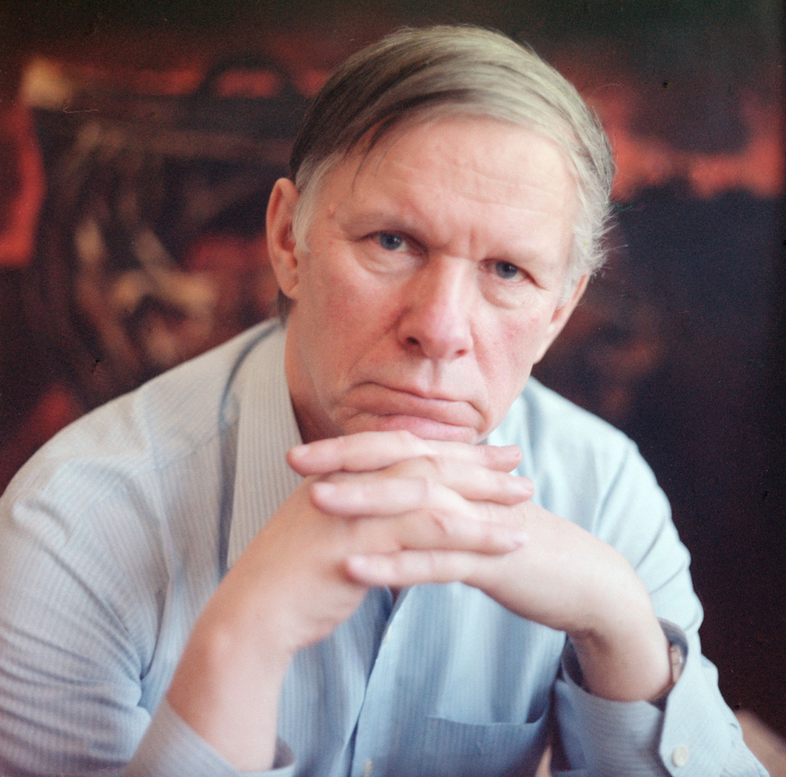

Приветсвуем Вас на нашем сайте! Он посвящен белорусским поэтам. Здесь Вы можете узнать более подробно о Вашем любимом авторе. Читайте книги и становитесь грамотными с Нами!
Деятель дня:

Васи́ль Влади́мирович Бы́ков (белор. Васіль Уладзіміравіч Быкаў), (родился 19 июня 1924, дер. Бычки Ушачского района Витебской области. 22 июня 2003, Боровляны) — советский и белорусский писатель, общественный деятель, депутат Верховного Совета БССР , участник Великой Отечественной войны. Член Союза писателей СССР. Народны паэт Беларусі(1980). Лауреат Ленинской премии (1986). Лауреат Государственной премии СССР (1974). Лауреат Государственной премии Белорусской ССР (1978).
Читать подробнее ->Смотрите также
Создатели
Над сайтом работали студенты 2 курса БГУИР ПОИТ: Митюля Евгений, Денис Шафаренко, Даниил Ягниш.
Материалы взяты с общедоступных ресурсов.